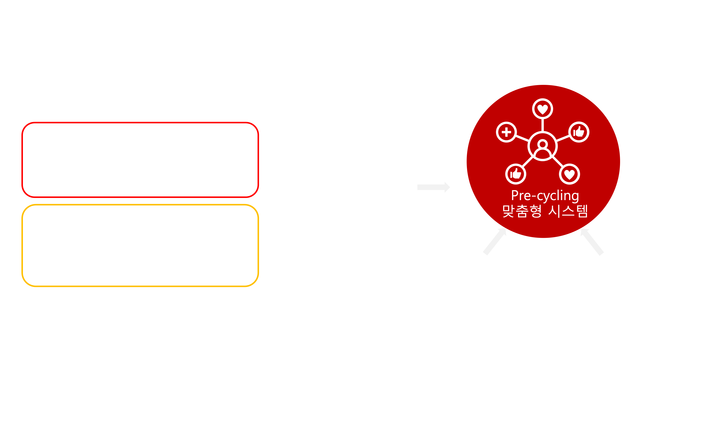
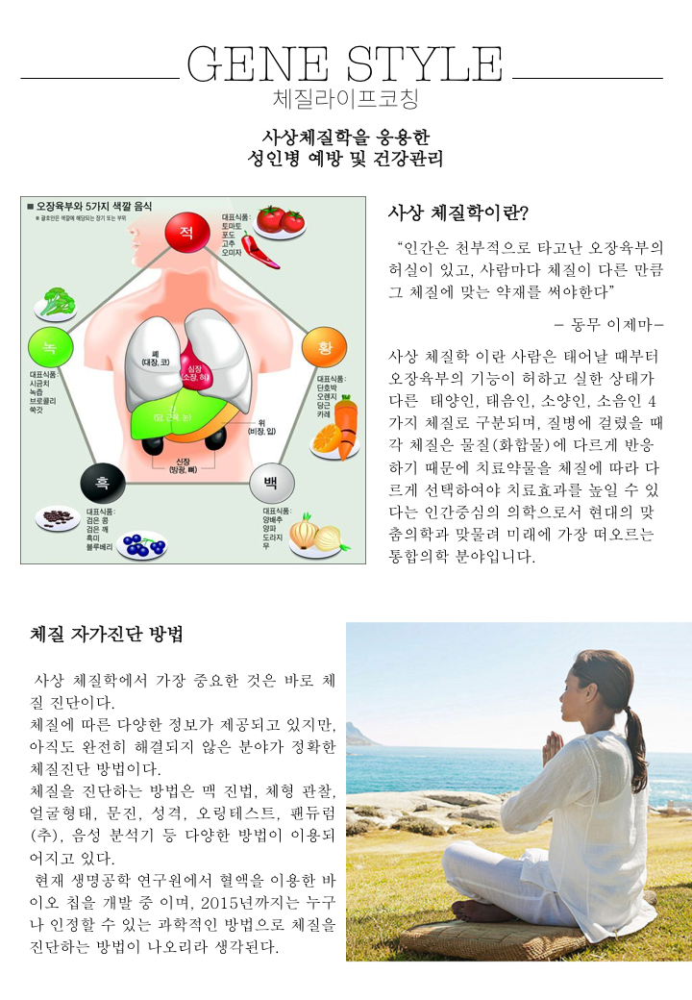
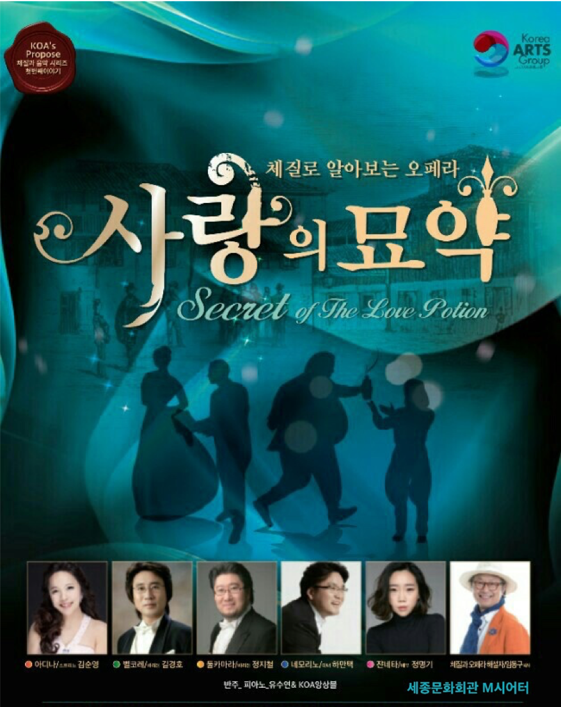
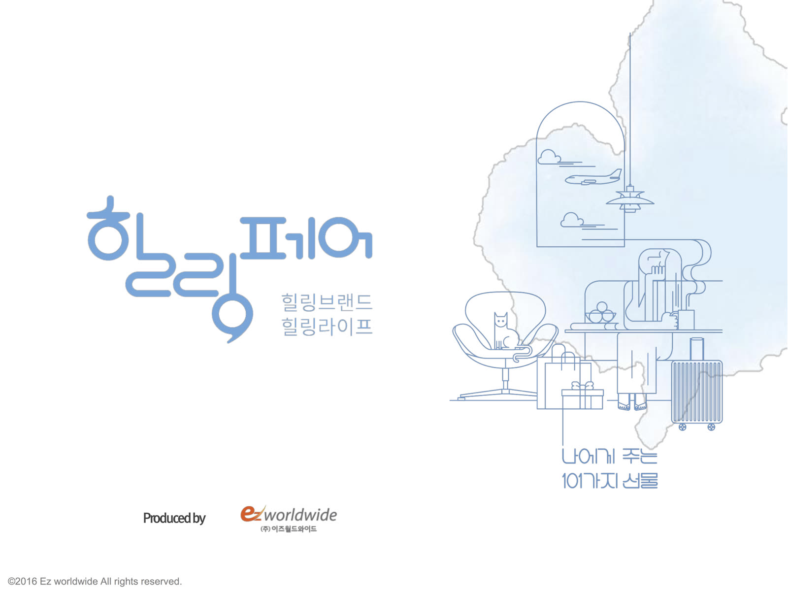
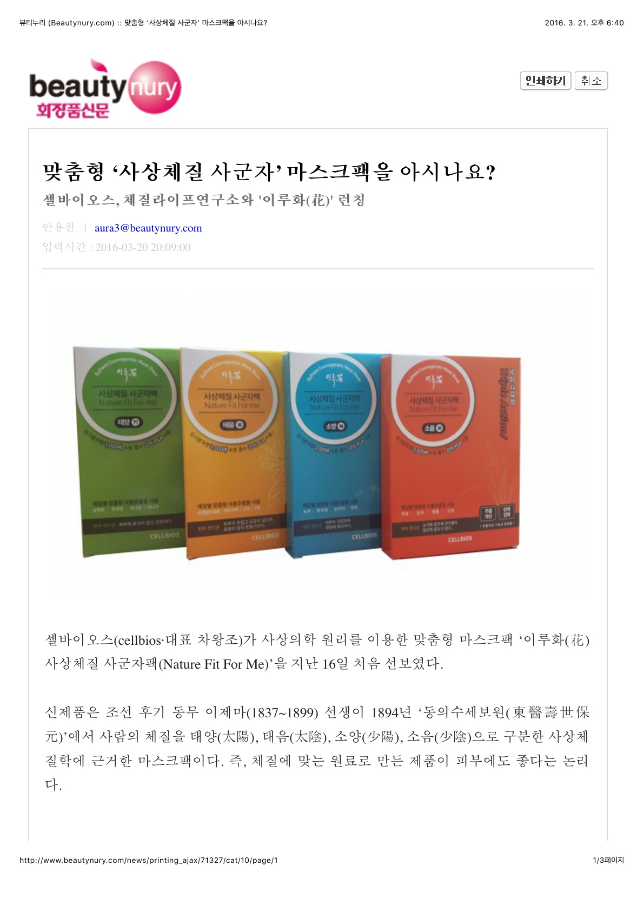
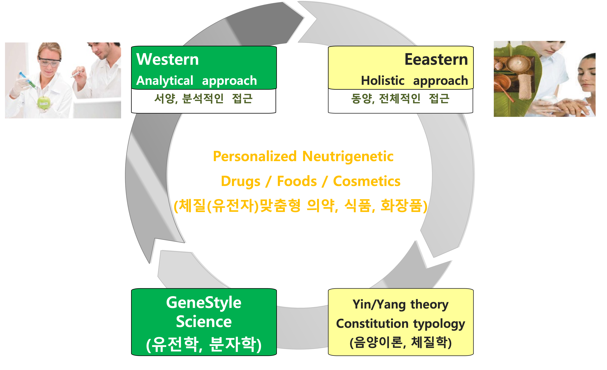
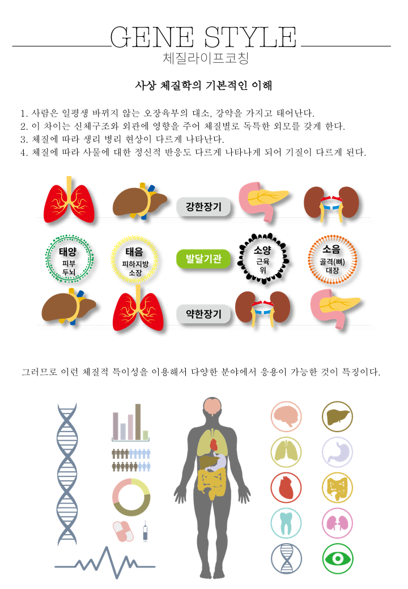
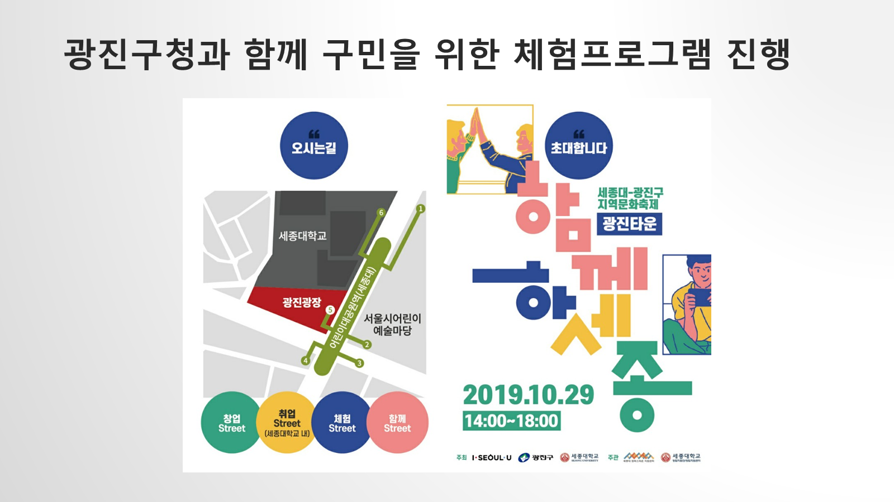
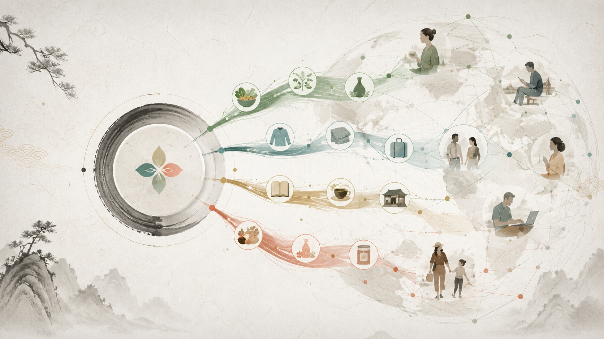

사람과 상황
체질 경향, 상태, 목표, 장소와 금기를 함께 묻습니다.

사상체질의 연구와 포트폴리오 비즈니스, 국내외 파트너의 소통을 연결합니다. 4,867건의 로컬 기록을 바탕으로 계속 성장하는 마스터 허브입니다.
“나를 네 칸 중 하나에 넣는 서비스가 아니라, 오늘의 나에게 맞는 다음 선택을 함께 찾는 서비스.”
체질만 붙이는 것이 아니라, 고객의 현재 맥락을 읽고 산업의 핵심 장면에 연결한 뒤 실제 변화를 다시 확인합니다.
체질 경향, 상태, 목표, 장소와 금기를 함께 묻습니다.
고정 판정 대신 관찰할 반응과 불확실성을 설명합니다.
음식·향·옷·공간·콘텐츠 중 필요한 장면을 큐레이션합니다.
강의, 공연, 제품, 상담, 스파, 여행으로 구현합니다.
만족·행동·안전을 확인하고 다음 선택을 조정합니다.
직접 증빙, 존재하는 산출물, 복수 정황, 기획문서, AI 대화를 구분했습니다. 아래의 각 프로그램은 원본 상세 페이지로 이어집니다.
사상체질의 언어를 누구나 이해하는 생활 언어로 번역 · 개발·운영 · 97건 연결
근거 페이지 →설문·안면·음성·체형·데이터를 결합하는 설명 가능한 분석 · 개발·연구 · 138건 연결
근거 페이지 →체질과 성향을 학습·진로 선택의 질문으로 연결 · 개발·운영 · 220건 연결
근거 페이지 →학생·학부모·교사를 위한 체질별 학습·독서·소통 · 개발·운영 · 29건 연결
근거 페이지 →리더의 의사결정·관계·팀 운영을 체질 언어로 코칭 · 개발·운영 · 135건 연결
근거 페이지 →먹고, 입고, 쉬고, 관계 맺는 일상을 한 사람의 리듬으로 설계 · 개발·운영 · 367건 연결
근거 페이지 →서로 다른 반응 방식과 회복 리듬을 갈등 예방에 활용 · 기획·개발 · 115건 연결
근거 페이지 →건강·관계·역할·여가를 함께 보는 후반기 삶 설계 · 기획·운영 · 40건 연결
근거 페이지 →강의·음악·스토리텔링이 결합된 참여형 에듀테인먼트 · 개발·운영 · 23건 연결
근거 페이지 →직장인의 건강·소통·리더십을 조직 맥락에 맞게 구성 · 운영 · 106건 연결
근거 페이지 →지식을 서비스로 전달하는 강사·큐레이터 양성 · 개발·운영 · 38건 연결
근거 페이지 →체질 질문을 식사·운동·수면·스트레스 관찰과 연결 · 연구·기획 · 367건 연결
근거 페이지 →한 끼의 선택을 체질·상태·상황에 맞춘 경험으로 전환 · 기획·개발 · 32건 연결
근거 페이지 →소재 과학과 체질별 사용 맥락을 검증 가능한 프로토콜로 연결 · 연구·기획 · 13건 연결
근거 페이지 →피부·감각·루틴에 맞춘 체질 기반 뷰티 큐레이션 · 개발·기획 · 152건 연결
근거 페이지 →향기 선호와 생활 장면을 결합한 감각적 셀프케어 · 개발·기획 · 138건 연결
근거 페이지 →옷·색·소재·액세서리로 자기이해를 표현하는 체질 스타일링 · 개발·기획 · 55건 연결
근거 페이지 →진단에서 푸드·향기·온열·동작까지 이어지는 프리미엄 웰니스 여정 · 기획·개발 · 29건 연결
근거 페이지 →감각·온열·호흡·회복 루틴을 상태 기반으로 조합 · 기획·개발 · 156건 연결
근거 페이지 →짧은 체험에서 상담·제품·후속 프로그램으로 이어지는 현장 모델 · 운영·성과 · 37건 연결
근거 페이지 →지역·산업 행사에 적용하는 이동형 체질 콘텐츠 · 운영·기획 · 32건 연결
근거 페이지 →지역의 음식·자연·문화와 개인의 리듬을 엮는 여행 · 기획·운영 · 66건 연결
근거 페이지 →진단·식음·뷰티·아로마·리추얼을 항해 일정에 맞춘 프리미엄 프로그램 · 기획 · 3건 연결
근거 페이지 →사상체질 원형과 응용 경험을 축적하는 장기 지식 IP · 개발 · 154건 연결
근거 페이지 →기사·방송·유튜브·오디오·숏폼으로 확장되는 이야기 자산 · 개발·운영 · 21건 연결
근거 페이지 →전통 지식과 현대 연구 질문을 연결하고 한계를 함께 기록 · 연구·발표 · 496건 연결
근거 페이지 →질문지·안면·행동 데이터를 설명 가능한 모델로 구조화 · 연구·개발 · 299건 연결
근거 페이지 →체질을 고정 라벨이 아닌 생활 데이터의 해석 좌표로 활용 · 기획·개발 · 19건 연결
근거 페이지 →유전 정보를 운명으로 단정하지 않고 체질·환경·행동과 함께 해석 · 탐색연구·기획 · 689건 연결
근거 페이지 →장내 생태와 식사·수면·정서의 변화를 장기 추적하는 연구축 · 탐색연구·기획 · 105건 연결
근거 페이지 →혈관·운동·수면·스트레스 지표와 체질 가설을 검증하는 연구축 · 탐색연구·기획 · 199건 연결
근거 페이지 →자기보고와 생체신호를 가족·관계·회복 코칭에 신중히 연결 · 탐색연구·기획 · 837건 연결
근거 페이지 →온열 경험과 회복 지표의 연관을 안전 프로토콜로 검토 · 탐색연구·기획 · 55건 연결
근거 페이지 →한국 원형을 영어·러시아어·터키어 등 문화 맥락에 맞게 번역 · 개발·기획 · 19건 연결
근거 페이지 →연구·교육·제품·관광 파트너를 묶는 실행 생태계 · 운영·기획 · 363건 연결
근거 페이지 →성과 주장을 원본 증빙과 연도 검증으로 관리 · 검증중 · 9건 연결
근거 페이지 →새로 만든 장식 이미지가 아니라, 실제 로컬 원본의 개념도·포스터·현장·기사·제품 기록을 사용했습니다.






기업교육, 공공기관 강의, 앱, 식품전시, 힐링페어, 스파와 지역관광의 기록을 파트너별로 정리했습니다.
국내 협업 보기
기록된 일본·브라질·튀르키예·중국 접점을 검증하고, 원형의 계보와 안전 프로토콜, 다국어 운영 표준을 하나의 글로벌 IP로 발전시킵니다.
글로벌 실증과 전략36개월 IP 계획
공동연구, 원형자료 요청, 강의·교육, 제품·프로그램 공동개발과 국내외 파트너십을 제안해 주세요.